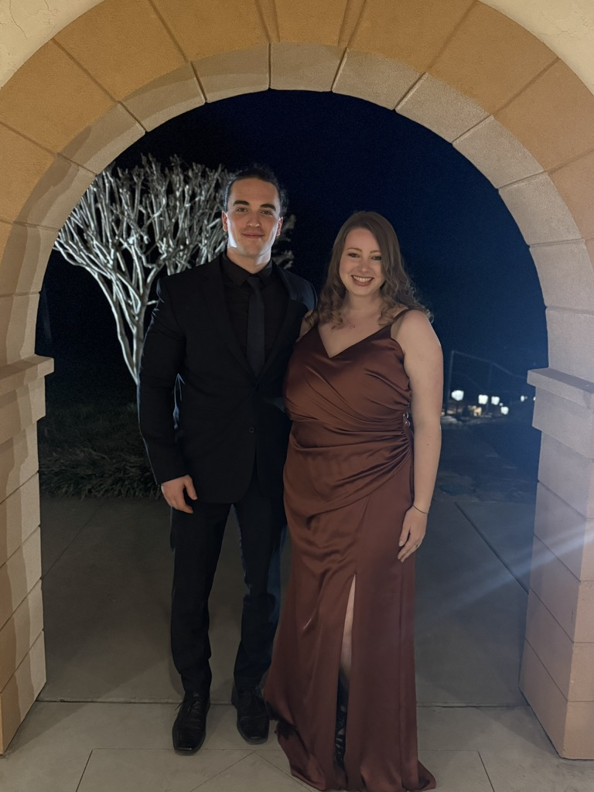

Dear Elise,
Happy anniversary! I'm not a big crafter, but I do like to code, so I made this for you. Enjoy!
This is a letter about twelve, told in twelve ways.
Human beings take between 12 and 20 breaths per minute. 12 when they're relaxed, comfortable, and at peace. You are all those things to me; I can breathe easy when I'm with you.
Many flowers have twelve petals. Here's to continuing to bloom with you.
A dozen roses is a classic gesture of love, and no anniversary card would be complete without it.
Relationships aren't one dimensional. This dodecahedron represents every angle of you I've come to know and love.
Much can happen in a day. Throughout every hour of every day I know you're there for me, no matter what happens.
Each month brings with it new seasons, new holidays, new challenges, and new adventures. No matter the seasons of the world, I'm glad I experience them with you.
Ancient astronomers divided the lunar cycle into twelve phases. We've changed many times over the last twelve years, and seen all phases of each other.
Every song ever written uses the same twelve notes, but from them emerges infinite unique melodies. Our relationship is like a song I can play on repeat.
The 12 bar chord progression is the most popular chord progressions in blues. I had to include it here because we know how to get down.
There are twelve constellations in the zodiac. Sailors used them to find their way home. You've always been that for me, the constant I orient by.
It takes Jupiter twelve years to go around the Sun. So technically this is our first anniversary on Jupiter. While we would have considered 12 years a long time when we were in high school, it also is just the beginning of all the time that remains. To many more one year anniversaries, on many different cosmic timelines.
I've loved being with you the last 12 years. Here's to the next 12.
Love, Dawson ❤️
